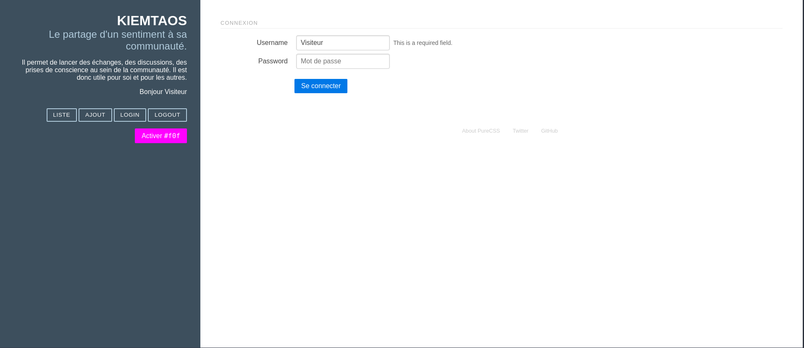

Introduction
Je m'appelle Justin Bellanger j'ai 23 ans et je vis près d'Angers. j'aime lire, faire du sport (courrir, nager), jouer au jeux vidéos, regarder des films et des séries et pleins d'autres choses. Je suis quelqu'un de timide et reserver mais curieux, persévérant et j'ai l'envie d'apprendre.
Formations
Mon parcours lycée commence de 2015 à 2017 ou j'ai fait un Bac Techno STI2D option Systèmes d'Information et Numérique. Cette option nous amenait à étudier les méthodes de transmission avec le numérique. J'y ai étudier aussi les cartes électroniques (les composants et leur rôle dans la carte).
De 2017 à 2019, j'ai poursuivis mes études dans la continuité de mon cursus BAC avec un BTS Systèmes Numériques option A : Informatique et Réseaux. Dans ce BTS scindé principalement en 2 parties (partie dèv logiciel et partie réseaux), en dèv logiciel on apprenait les langages C/C++, le concept de programmation orienté objet, les classes etc... En réseaux (partie très théorique), j'ai vu l'adressage ip (plage d'adresse disponible), différent protocoles (ARP, IMCP, TCP/IP), on a aussi vu la plannification et la gestion de projet.
Du 09/03/2020 au 15/06/2020, en plein pendant la période du confinement j'ai fait une formation de développeur web d'une durée de 3 mois (448h) avec l'école O'Clock en 100% à distance de chez moi. Durant la formation, j'ai appris les langages côté front (Html, CSS, JavaScript) et côté back (PHP et MySql) mais aussi Bootstrap, j'ai également vu plusieurs concept tel que la programmation Orienté Objet, l'architecture Model Vue Controleur, les API et aussi GIT le logiciel de versionning.
Expériences
KLS-Concept
C’est grâce à Linkendin que j’ai trouvé le stage, Monsieur Kulas Frédéric mon maître de stage faisait partie d’une ancienne promo de chez O’Clock, il m’a proposé un stage car j’avais déjà eu une expérience avec le Framework Angular avec mon précédent stage. Un ami à mon maître de stage à monter un site avec lui pour l’aide à la logistique et la gestion de pièces et équipement pour particuliers et entreprises. Le sujet de stage était de faire l’application GSE Web mobile permettant de visualiser les commandes de pièces passé sur le site ainsi que d'autres fonctionnalités comme scanner un produit ou accéder à son inventaire. Je devais réaliser l’application à l’aide d’Angular 11 dernière version du Framework et Ionic version 5, un framework qu’on utilise pour des applications mobiles Hybride à la fois pour IOS et Android. Je prenais des notes quasiment chaque jour sur ce que je faisais la journée. Le stage m’a permis de passer pas mal de temps en autonomie, quand j’avais un problème je cherchai au maximum (souvent sur stackoverflow) avant d’essayer de demander de l’aide à mon maître de stage. Même si ce stage m’a été très bénéfique, la distance n’a pas rendu possible un encadrement et un accompagnement permettant d’entrer directement dans le monde professionnel.
Acoss Nancy
Dans le cadre de mon BTS, j'ai effectué un stage me permettant d'acquérir de l'expérience mais aussi de rentrer plus en profondeur dans le monde de l'entreprise. Le stage c'est fait à l'Acoss Nancy, une entreprise qui gère et traîte informatiquement les dossiers des clients Urssaf. La refonte du site se faisait à l'aide d'Angular le Framework Front-end de Google, j'ai pendant une semaine et demi et un peu avant le stage pratiquer Angular car je le rappel je n'avais à par Html/CSS que j'ai appris par moi-même aucune connaissance en développement web avec mon BTS qui était orienté dèv logiciel et réseaux. J'étais avec une autre stagiaire qui était elle en licence informatique, nous avons d'abord fait le tutoriel la tour des héros qui avait pour but de nous amener à découvrir les notions/concepts d'Angular comme les routes, composants, modules etc..., puis nous nous sommes lancé dans le sujet. Ce stage m'à conforter dans l'idée de vouloir faire du développement web.
Travaux
OShop
Description : OShop est une conception de boutique en ligne permettant d'acheter des articles en fonction d'une catégorie, marque, type de produit sélectionner, vous pouvez voir sur la page d'accueil 5 catégories de produits, ainsi que les produits associés à cette catégorie, vous pouvez voir également la fiche du produit en détail.
Contexte du projet : projet réalisé avec O'Clock.
Outils et Technologies pratiqués:
Compétences travaillées :
OBlog
Description: OBlog est une conception de site permettant de mettre des articles, c'est une sorte de blog collaboratif, les articles sont listés selon une catégorie et un auteur, vous pouvez également sélectionner un auteur pour voir tout les articles qu'il a écrit, ainsi qu'une catégorie pour voir quel article y est associé.
Contexte du projet : projet réalisé avec O'Clock.
Outils et Technologies pratiqués:
Compétences travaillées :
Kiemtao
Description: Kiemtao est un site permettant de s'inscrire à un formulaire pour ajouter s'est humeurs, un mode #fof disponible(comme le mode sombre sur twitter mais flashy).
Contexte du projet : projet réalisé avec O'Clock.
Outils et Technologies pratiqués:
Compétences travaillées :
TodoList
Description: Le site TodoList permet d'ajouter des choses à faire, vous pouvez les archiver, les supprimer, c'est une sorte de pense-bête ou d'aide mémoire.
Contexte du projet : projet réalisé avec O'Clock.
Outils et Technologies pratiqués:
Compétences travaillées :
Invaders
Description: Space Invaders permet de choisir son modèle à afficher en cliquant sur des boutons.
Contexte du projet : projet réalisé avec O'Clock.
Outils et Technologies pratiqués:
Compétences travaillées :
Snake
Description: Le jeu du serpent est un jeu ou le serpent représentée par le rectangle jaune doit manger le fruit représentée par le carré rouge, si le fruit est manger le score du joueur augmente de 1, si le serpent se mord la queue où se prend un des murs, le jeu recommence à 0.
Contexte du projet : projet personnel.
Outils et Technologies pratiqués:
Compétences travaillées :
Game Of Life
Description: Le jeu de la vie est un jeu qui nécessite l'intervention d'aucun joueur lors de son déroulement, une cellule possède 8 voisins qui sont ses cellules adjacentes, à chaque étape l'évolution d'une cellule est déterminée par l'état de ses 8 voisins.
Contexte du projet : projet personnel.
Outils et Technologies pratiqués:
Compétences travaillées :
Morpion
Description: Le morpion ou tic-tac-toe est un jeu se jouant à 2 joueurs sur un carré de 3*3 cases, les joueurs doivent mettre des symboles, soit X soit O, un joueur gagne quand une des colonnes, lignes ou diagonale est remplie par trois mêmes symboles.
Contexte du projet : projet personnel.
Outils et Technologies pratiqués:
Compétences travaillées :
Quiz Série Télé
Description: L’utilisateur répond aux 10 questions du quiz, à la fin le jeu vous donnes votre nombre de bonnes réponses.
Contexte du projet : projet personnel.
Outils et Technologies pratiqués:
Compétences travaillées :
Calculette
Description: Représentation d’une calculatrice permettant de faire des opérations simples, additionner, soustraire, multiplier et diviser.
Contexte du projet : projet personnel.
Outils et Technologies pratiqués:
Compétences travaillées :
Interface PS5
Description: L'interface représente la page d'accueil de la PS5, l'image de fond change en fonction de la vignette cliqué.
Contexte du projet : projet personnel.
Outils et Technologies pratiqués:
Compétences travaillées :
Awesome-list
Description: Site permettant de gérer sa productivité et créer son agenda avec un planning, chaque utilisateur peut se connecter avec son compte et accéder à son propre agenda
Contexte du projet : projet réalisé en stage.
Outils et Technologies pratiqués:
Compétences travaillées:
GSE-Web-mobile
Description: L'application GSE Web Mobile est un complément au site GSE Web permettant à l'utilisateur s'ayant inscrit sur le site de visualiser les commandes de pièces ou d'équipements qu'il aura passé, il pourra aussi accèder à son inventaire et suivre sa commande, il pourra scanner un produit q'il pourra commander par la suite.
Contexte du projet : projet réalisé en stage.
Outils et Technologies pratiqués:
Compétences travaillées: